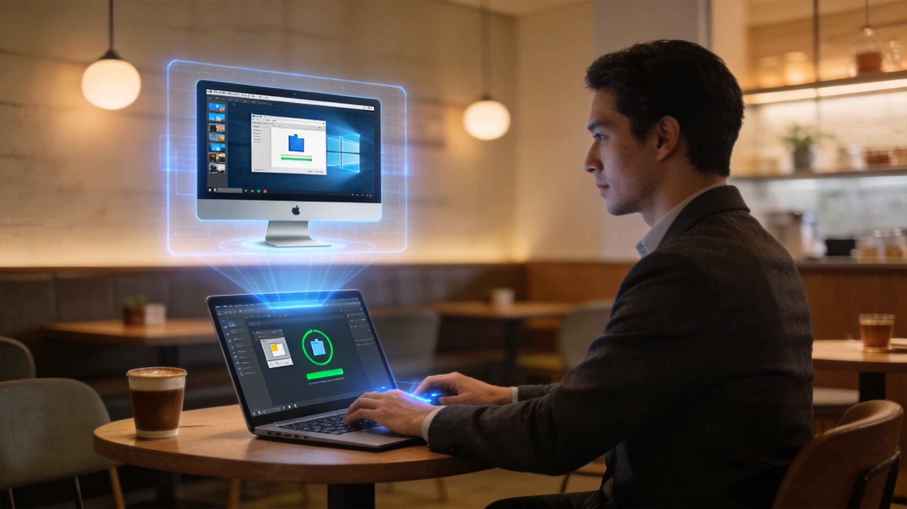
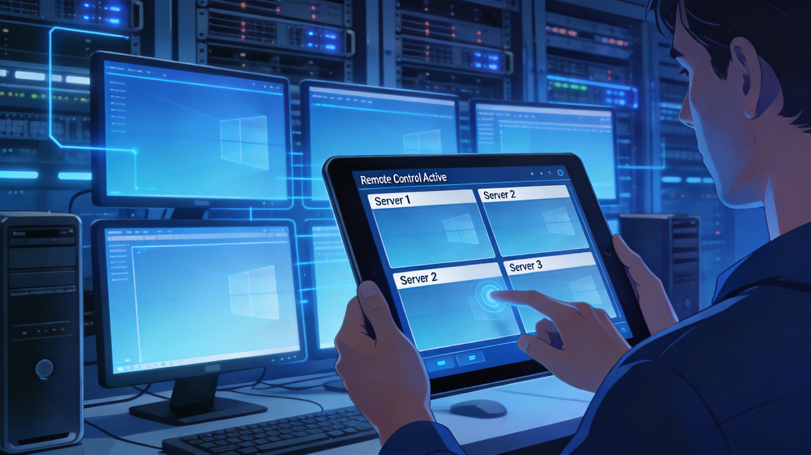
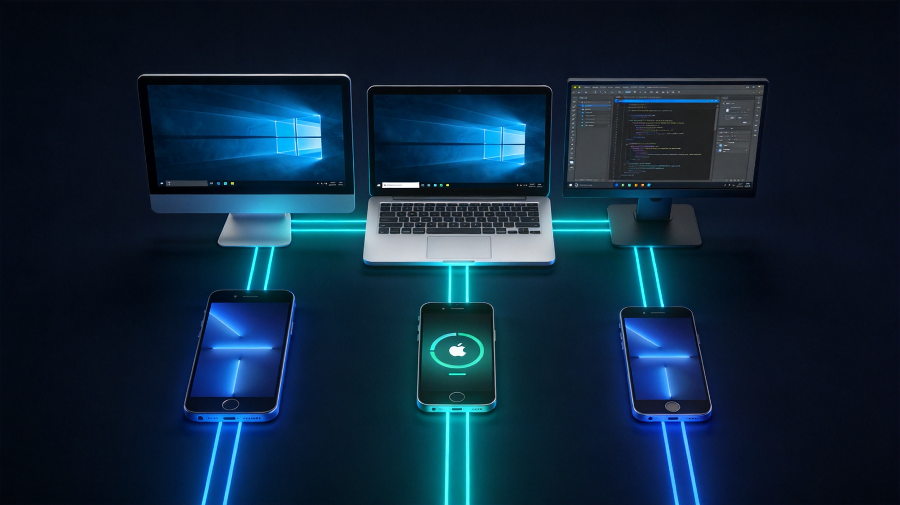

免费、安全、高速的远程桌面连接方案
全球用户
月连接时长
企业客户
国家地区
前往官网下载 ToDesk 安装包，支持 Windows、Mac、Linux 等系统
双击安装包，按照提示完成软件安装，全程仅需几秒钟
使用手机号或邮箱注册登录，也可跳过直接使用设备码连接
在被控端获取设备码，在主控端输入即可建立远程连接
端到端延迟低至 3ms，自研 RTC 协议优化，流畅操作如本地般顺滑
60FPS 高帧率，8ms 超低编码延迟，纤毫毕现的视觉体验
Windows / Mac / Linux / iOS / Android / 鸿蒙系统全覆盖
xchacha20-ietf-poly1305 军事级加密算法，数据传输固若金汤
传输速度高达 12MB/s，支持断点续传，大文件轻松搞定
多屏对多屏映射，虚拟扩展屏技术，办公效率倍增
完美支持数位板、游戏手柄、蓝牙键鼠等各类外设
OCR 文字识别、日志分析、故障自查，智能运维新体验



| 功能特性 | ToDesk | TeamViewer | 向日葵 | AnyDesk |
|---|---|---|---|---|
| 基础使用 | 免费 | 商业收费 | 免费/付费 | 免费/付费 |
| 延迟表现 | 3ms | 15-30ms | 10-20ms | 8-15ms |
| 4K画质 | ✓ | ✓ | ✗ | ✗ |
| 文件传输速度 | 12MB/s | 8MB/s | 5MB/s | 6MB/s |
| 全平台支持 | ✓ 6大平台 | ✓ | ✓ | ✓ |
| 端到端加密 | ✓ | ✓ | ✓ | ✓ |
| AI助手 | ✓ | ✗ | ✗ | ✗ |
| 企业专版 | ✓ | ✓ | ✓ | ✗ |
"用了 ToDesk 三年了，从个人用户变成公司统一部署。它的高清画质和低延迟让远程办公变得毫无压力，比之前用的 TeamViewer 体验好太多。"
"作为独立开发者，经常需要远程调试客户环境。ToDesk 的跨平台支持和文件传输功能太强大了，12MB/s 的速度让大文件传输不再是问题。"
"我们是连锁教育机构，用 ToDesk 给各地分校做远程培训。AI 百宝箱的 OCR 功能特别实用，批量处理文档效率提升明显。"
"疫情期间居家办公全靠 ToDesk，延迟低到几乎感觉不出是远程。特别是游戏手柄支持，周末还能远程陪父母玩老游戏，太贴心了。"
"运维 200 多台服务器，以前用命令行，现在用 ToDesk 图形化操作效率翻倍。批量部署功能让新服务器上线时间从 2 小时缩短到 20 分钟。"
"给家里老人电脑装上 ToDesk，他们遇到问题我远程一看就知道了。比电话里描述问题方便一百倍，老妈终于不再说电脑坏了。"